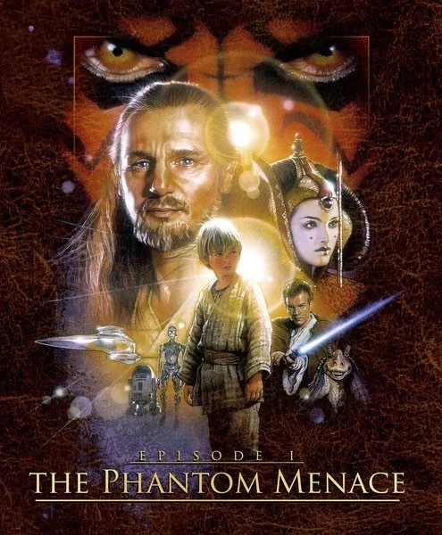
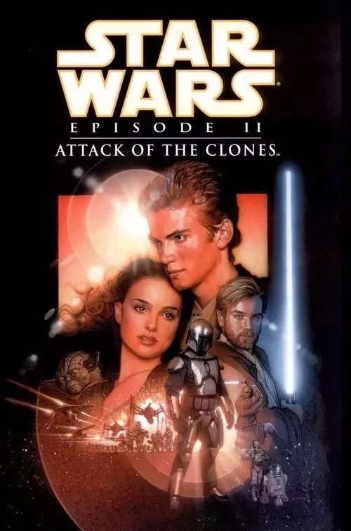

| 上映时间 | 演职人员 | 剧情概要 | |
|---|---|---|---|
《星球大战前传1：幽灵的威胁》  |
1999年 | 角色：奎刚·金Qui-Gon Jinn 演员：连姆·尼森 角色：欧比旺·肯诺比Obi-Wan Kenobi 演员：伊万·麦克格雷格 角色：帕德梅·艾米达拉Queen Amidala 演员：娜塔莉·波特曼 角色：安纳金·天行者Anakin Skywalker 演员：杰克·罗埃德 角色：Senator Palpatine 演员：伊恩·麦克迪阿梅德 角色：Shmi Skywalker 演员：佩尼拉·奥盖斯特 |
很久以前，在遥远的银河系，古老的银河共和国在偏远星系开征贸易航线税，这一举措在议会引起了极大争议。在西斯尊主达斯·西迪厄斯的操纵下，贸易联盟利用其新组建的机器人大军封锁了帕尔帕廷议员的家乡纳布，旨在抗议新税种的出台，同时检验新军队的战斗力。
贸易联盟的叛乱令最高议长菲尼斯·瓦洛伦内外交困，他越权将两名绝地武士，奎刚·金和欧比旺·克诺比，秘密派遣至贸易联盟封锁舰队的旗舰，会见贸易联盟总督纽特·冈雷。冈雷很清楚，绝地此行没有获得议会的批准，于是联系了西迪厄斯。西迪厄斯命令冈雷杀死绝地，摧毁绝地的飞船，入侵纳布星球。奎刚和欧比旺死里逃生，还从侵略者手中救出了帕德梅·阿米达拉女王。他俩说服女王乘坐星际飞船冲出封锁线，以便把入侵的消息带到共和国首都科洛桑星球。
女王的星际飞船在逃亡时受损，被迫转飞至赫特人控制下的沙漠星球塔图因。奎刚一行在那里遇到了阿纳金·天行者，发现他天生就与原力有惊人的联系。在阿纳金的帮助下，奎刚获得了修复飞船所必需的所有零配件。在返回飞船的途中，他们遭到神秘西斯尊主达斯·摩尔的袭击。绝地武士没有恋战，他们摆脱这个西斯后，与阿米达拉和阿纳金一起直飞科洛桑。在首都，阿米达拉试图说服议会援助纳布，但议会的官僚政治和不作为使她未能如愿。年轻的女王失望透顶，只能要求对瓦洛伦进行不信任投票，为改选新议长铺平道路。阿米达拉决定返回纳布抵抗贸易联盟的入侵，绝地委员会派遣奎刚和欧比旺保护她。在纳布，女王率部攻入被占领的希德城，逮捕了冈雷。摩尔刺死了奎刚，自己却被欧比旺腰斩。临终前，奎刚要欧比旺收阿纳金为徒。最终的胜利是阿纳金带来的：他驾机摧毁了机器人控制舰，导致贸易联盟的战斗机器人全部关闭。
贸易联盟看似在纳布之战中落败，但达斯·西迪厄斯实现了自己的目标，没有让任何人怀疑到这场阴谋的实质。人们对纳布的同情，让帕尔帕廷赢得了最高议长的选举 |
《星球大战前传2：克隆人的进攻》  |
2002年 | 角色：欧比旺·肯诺比Obi-Wan Kenobi 角色：安纳金·天行者Anakin Skywalker 角色：詹戈·费特 Jango Fett |
纳布战役十年之后，此时银河系正处于一片混乱和动荡之中。在变节的前绝地杜库伯爵的策动下，有几千个星系决定一起脱离银河系共和国独立，然而银河系共和国还不具备足够的军事实力来镇压这些分离主义份子，在武力不足的状况下，银河系共和国联合议会决定组成临时军队攻打分离主义份子，而其中的一名议员，也就是纳波星球前任女王帕德梅·阿米达拉力排众意，极力反对这种以暴力对抗暴力的策略，因为这会引发银河系内大规模的争斗和屠戮，但并不是每个人都同意阿米达拉维护和平的决心，于是不断有人密谋刺杀阿米达拉以达到自己不可告人的目的。
针对不断出现的分裂活动，议长帕尔帕庭召集绝地以及已经退位成为参议员的帕德梅商讨对策，此时已经升任为绝地武士老师的欧比旺·克诺比派出他的徒弟阿纳金·天行者负责保护阿米达拉的安全。在护送阿米达拉前往安全避难所的路途中，一种青涩而微妙的感情开始在两个年轻人心里滋生，这种感情无疑将会动摇阿米达拉一向以天下为己任的处事态度，也将会挑战阿纳金作为绝地武士必须恪遵的“无怒、无憎、无情”的不二誓。与此同时，为了彻查星际冲突的根源，奥比王冒着生命危险深入到遥远的海洋星球卡米诺，他发现，这个一向被认为是蛮荒之地的区域已被人秘密开发，无数的克隆人试验正在紧锣密鼓地实行，克隆人大军正在组建，这一切甚至可能影响银河共和国的未来命运，星际战争已经箭在弦上，一触即发。不久，帕德梅、阿纳金和欧比旺·克诺比被卷入了分离主义运动的心脏吉奥诺西斯，目睹了克隆人战争的爆发 。在无数机器人军团的围攻之下，二百多人的绝地特遣队损失惨重，最后仅剩包括欧比旺、阿纳金在内的十几人生还。危机时刻，尤达大师率领克隆人军队及时赶到，击溃了分离组织在吉奥诺西斯的机器人军团。
在与杜库伯爵的光剑对决中，欧比旺战败，阿纳金的右手也被砍掉，后来尤达大师出现，杜库不敌而选择了退逃。不久，杜库来到一个神秘西斯尊主身边恭敬汇报，声称一切如计划设计那样，克隆人战争开始了；而这一点也被尤达深深感觉到了，共和国正陷入一个很难预计的前景之中。无数克隆人大军整装待发，登上欢呼者级强袭登陆舰，奔赴各自的战场。纳布湖畔，阿纳金带着他新换的机械右手，和阿米达拉举行了秘密婚礼，只有R2-D2和C-3PO两个机器人见证了这一切 |
《星球大战前传3：西斯的复仇》 |
2005年 | 角色：欧比旺·肯诺比Obi-Wan Kenobi 角色：安纳金·天行者Anakin Skywalker 角色：达斯·西迪厄斯Darth Sidious
|
克隆人战争进入到第三年，绝地武士团率领的大共和国军与独立星系邦联陷入了一场席卷整个银河的苦战。恐怖的分离势力机器人军官格里弗斯将军奇袭共和国首都，绑架了最高议长帕尔帕廷（实际是帕尔帕廷一手策划的阴谋）。 梅斯·温杜逐渐相信议长为了个人私利而想延长战争，见时机已成熟，帕尔帕廷终于揭开了他的西斯真面目。很快，阿纳金·天行者知道了帕尔帕廷的真实身份——达斯·西迪厄斯，并告知了温杜。由于尤达大师在卡西克星球忙于应付分离势力的进攻，欧比旺在尤塔帕星球奋力追杀格里弗斯将军，因此温杜独自率队前去逮捕帕尔帕廷。
帕尔帕廷又开始自己所擅长的表演，他装成虚弱的样子，博取阿纳金的同情。阿纳金·天行者在劝说温杜不要私自处死帕尔帕廷、要让他接受审判，这一切无果后，他在混乱中砍断温杜的一只手，帕尔帕廷趁机攻击温杜，阿纳金很快被帕尔帕廷拉入黑暗面，在被帕尔帕廷赐名为达斯·维德后，他率领一个军团的克隆人士兵剿灭了绝地圣殿中的昔日同伴。帕尔帕廷启动了早已计划好的自动预防机制——66号指令，遍布银河的克隆人士兵开始受到帕尔帕廷的编程控制，向他们的绝地长官开火。维德赶赴穆斯塔法星球，将分离主义委员会一网打尽，结束了克隆人战争。在议会的欢呼声中，帕尔帕廷改组银河共和国后称帝，邪恶的帕尔帕廷在延续千年的阴谋得手之后终于君临银河系，银河帝国在旧共和国崩溃后的灰烬中崛起。
欧比旺在熔岩湖的岸边依靠经验和地理优势，砍断了阿纳金的双腿和右臂，阿纳金落入熔岩里身受重伤面目全非。欧比旺带着阿纳金的光剑和濒临死亡的帕德梅以及无限的悔恨失落地离开穆斯塔法。欧比旺也来到波利斯马萨，跟尤达、贝尔·奥加纳一起见证了天行者双胞胎兄妹的出世以及他们的母亲帕德梅·阿米达拉的去世。而阿纳金在被皇帝救走，经受了痛苦的外科手术后，被改造成了一个恐怖的半机器人。
在帝国歼星舰上，从医疗室里浴火重生的已经不再是阿纳金，而是西斯尊主达斯·维德。维德同帝国皇帝达斯·西迪厄斯、帝国最高军事长官威尔赫夫·塔金一起，监视着死星的建造。尤达将失传已久的死后化作”绝地英灵“的技能传授给欧比旺，然后流亡至达戈巴，阿纳金的女儿莱娅交由奥加纳夫妇在奥德朗星球抚养。欧比旺将阿纳金的儿子卢克·天行者带到塔图因，交给阿纳金异父异母的兄弟欧文·拉尔斯抚养，自己改名为本·克诺比，暗中关注着卢克的成长。银河系唯一的希望落在了这对隐姓埋名的孪生兄妹身上
|
| 返回上一页 |
|---|